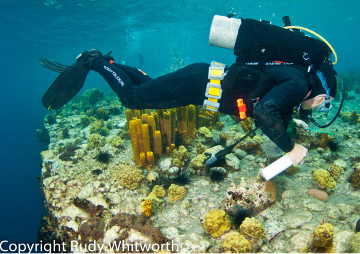

More recently, I have been part of the DNA barcoding program FISH-BOL, the Fish Barcode of Life Project, which is trying to obtain the sequence of a standardized segment of the mitochondrial genome (652 base pairs of cytochrome oxidase-1) for all fishes. Their comprehensive database is online as BOLD, the Barcode of Life Database, with wonderful tools and vast numbers of public sequences to explore. At present I have about 3,000 barcodes for several hundred species and collaborate with two other groups that focus on the Caribbean region as well. Combined, we have barcodes for perhaps 2/3 of the (approximately) 1200 shorefish species in the tropical western Atlantic. Initially I mainly used barcodes to identify fish larvae, but the results were often suprising and unexpected, and it has opened a Pandora's box of amazing information on the genetic structure of fish populations- which led to my latest interest in fish taxonomy. Mostly as a result of DNA sequencing, I have discovered several new reef-fish species, with many more waiting out there to be examined...
I hope to keep this site updated on my latest research plans and progress and use it as a vehicle to disseminate my published papers and present my ever-changing opus on the larvae of coral reef fishes. I will also make my collection data visible and available to other scientists and hopefully stimulate some networking among reef fish biologists who wish to collaborate on interesting subjects.
Benjamin Victor
To contact me via e-mail
From one of my recent expeditions:
My foray to Dominica, a volcanic island in the Windward chain of the Lesser Antilles. I am on the hunt for tiny fish with my trusty green aquarium net! note the scarcity of live corals- that is typical of many sites in the Lesser Antilles these days.
